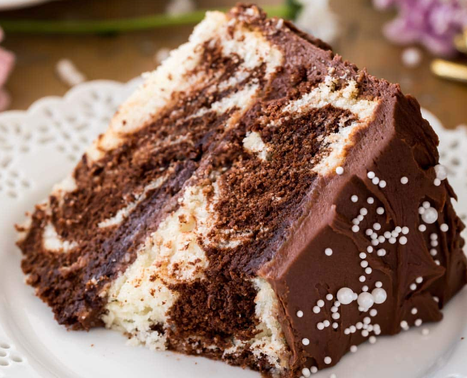

Marble Cake
\
Description
The ultimate people pleaser, this soft, fluffy, moist Marble Cake is a swirled masterpiece of vanilla and chocolate. This cake is shockingly easy to make and tastes as good as it looks!
Ingredients
- 4 oz semisweet chocolate bar finely chopped
- ½ cup unsalted butter softened (113g)
- ½ cup canola oil (or vegetable oil) (120ml)
- 1 ¾ cup granulated sugar (350g)
- 4 large eggs room temperature preferred
- 2 teaspoons vanilla extract
- 3 cups all-purpose flour (375g)
- 1 Tablespoon baking powder
- ¾ teaspoon salt
- ▢1 ¼ cup buttermilk room temperature preferred (300ml)
Chocolate Buttercream Frosting
- 1 cup semisweet chocolate chips (170g)
- 1 cup unsalted butter softened to room temperature (226g)
- 2 cups powdered sugar (320g)
- ½ teaspoon vanilla extract
- ½ teaspoon salt
- 2 Tablespoons heavy cream
Instructions
- Preheat oven to 350F and generously grease and flour two 8" round cake pans (you may instead use 9" pans, just keep in mind you will need to bake the cake for about 5 minutes less than indicated). Set aside.
- Place chopped chocolate in a microwave-safe bowl and microwave for 30 seconds. Stir well, and then return to microwave and heat in 15-second increments, stirring well in between, until chocolate is completely melted and smooth. Set aside.
- Using an electric or stand mixer, cream together butter, oil, and sugar until light and fluffy (about 30 seconds on high speed).
- Add eggs, one at a time, beating well after each addition. Pause as needed to scrape down sides and bottom of bowl.
- Stir in vanilla extract.
- In a separate, medium-sized bowl, whisk together flour, baking powder, and salt.
- Using a spatula and gently hand-mixing, alternate adding flour mixture and buttermilk to the butter/oil batter, starting and ending with flour mixture and mixing until just combined after each addition. Do not overmix!
- Pour ⅓-½ of the batter into a separate bowl and add chocolate mixture. Stir until completely combined and batter is evenly chocolate.
- Alternate adding vanilla and chocolate batter to each pan, evenly distributing batter into each pan. Use a knife to swirl for marbled appearance.
- Bake on 350F (175C) for 30 minutes, or until toothpick inserted in center comes out mostly clean but with a few moist crumbs (do not over-bake or the cake will be dry, you want there to be a few crumbs).
- Allow cake to cool for 15 minutes before carefully inverting onto cooling rack to cool completely before frosting.
Chocolate Frosting steps
- In a microwave-safe bowl, microwave chocolate chips at 15 second intervals, stirring between intervals, until chips are completely melted. Set aside and allow to cool slightly (about 10 minutes, stirring occasionally).
- Cream room temperature butter with an electric mixer. Stir in slightly cooled chocolate and beat well.
- Gradually add sugar, scraping down the sides and bottom of bowl occasionally.
- Sprinkle in salt and vanilla extract, stir well.
- Gradually add heavy cream, increase speed to high and beat for 1 minute.
- Spread a thick layer of frosting over the top of one cake round and sprinkle with mini chocolate chips. Top with second cake round and evenly frost cake. Slice and serve.
Back to home